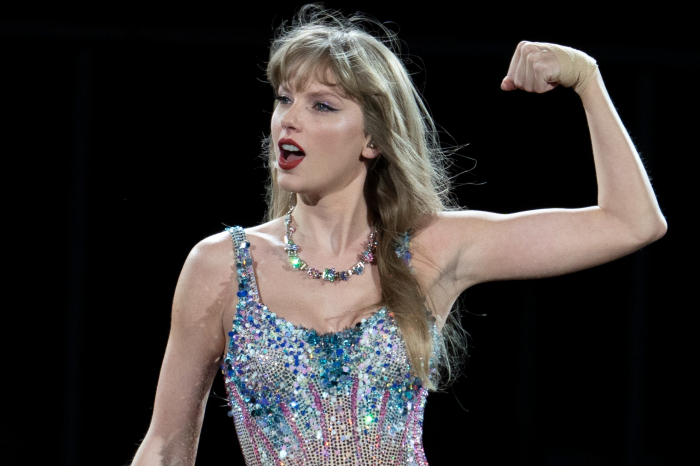

Taylor Swift
Click Here Click Here Taylor Alison Swift (born December 13, 1989) is an American singer-songwriter. Recognized for her songwriting, musical versatility, artistic reinventions, and influence on the music industry, she is a prominent cultural figure of the 21st century.
Taylor Swifts Albums by Year
- Taylor Swift (Debut) - 2006
- Fearless - 2008
- Speak Now - 2010
- Red - 2012
- 1989 - 2014
- Reputation - 2017
- Lover - 2019
- Folklore - 2020
- Evermore - 2020
- Midnights - 2022
American singer-songwriter Taylor Swift has released 10 original studio albums, three re-recorded studio albums, five extended plays, and four live albums. She has sold an estimated 114 million album units worldwide and, in terms of pure sales, tallied 37.3 million in the United States and 3.34 million in the United Kingdom. According to the Recording Industry Association of America (RIAA), her albums have garnered 51 million certified units in the United States.As of July 2023, she is the woman with the most weeks at number one on the US Billboard 200.

Some of My Personal Favourite Songs
- Love Story
- Style
- Getaway Car
- August
- Ivy